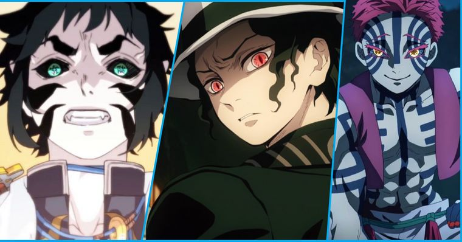
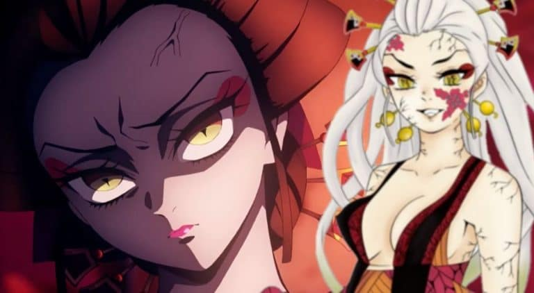
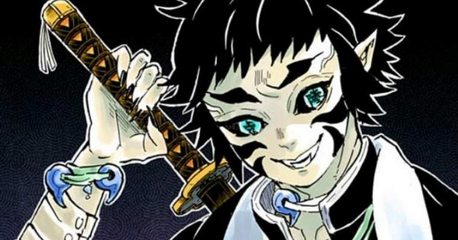
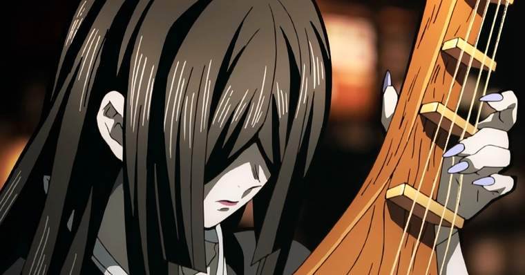
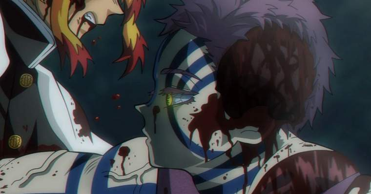
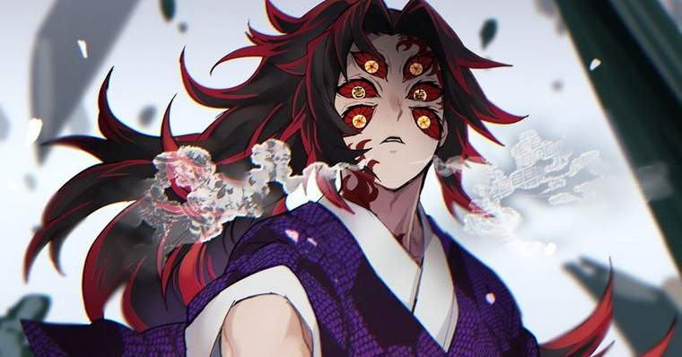

Onis
Considerados as principais ameaças do universo de Kimetsu no Yaiba, os Demônios, ou também conhecidos como Onis, são seres monstruosos e quase imortais que em sua maioria possuem uma ânsia por devorar humanos para ficarem cada vez mais fortes. Todos esses mostros foram criados por Muzan Kibutsuji e possuem grandes poderes
por mais que a primeira temporada do anime já tenha apresentado diversos demônios, a obra de Koyoharu Gotouge ainda possui onis bem mais habilidosos, que já aparecem no seu mais recente filme e que estarão presentes na segunda temporada da série entre eles estão alguns dos Onis a seguir:
Daki
Principal antagonista do arco do Distrito da Luz Vermelha e Lua Superior de número 6, Daki é uma poderosa Oni que utiliza como principal arma as faixas que ela veste, que são feitas com a sua própria carne. Essas faixas podem ser moldadas e controladas de diferentes formas, podendo funcionar como lâminas afiadas para atacar os seus alvos ou ainda prendê-los dentro delas.
Gyutaro

Compartilhando a posição de Lua Superior 6 com a sua irmã, Gyutaro possui habilidades de combate bem mais aprimoradas, conseguindo lutar com facilidade contra Tengen Uzui e Tanjiro ao mesmo tempo. Além disso, Gyutaro ainda declara que já havia matado anteriormente treze Pilares, o que só prova o seu alto nível. Através do Jutsu de Sangue Demoníaco, Gyutaro ainda é capaz de manipular o seu sangue e envenenar os seus golpes.
Kaigaku
Assumindo a posição de Lua Superior de número 6 após a derrota de Daki e Gyutaro, Kaigaku é o antigo parceiro de treinamento de Zenitsu e um ex-Caçador de Demônios, que ao testemunhar o imenso poder de Kokushibo, se ajoelhou diante dele e pediu para também se tornar um demônio. Como usuário da Respiração do Relâmpago, o Jutsu de Sangue de Kaigaku complementa o seu estilo de luta, permitindo que ele gere e manipule eletricidade.
Nakime
Embora já tenha aparecido brevemente na primeira temporada do anime, Nakime só recebe mais destaque nos arcos finais do mangá, após assumir a posição de Lua Superior de rank 4. Tocando o seu biwa, Nakime consegue manipular um castelo aparentemente infinito, sendo capaz de criar pilares gigantescos para tentar esmagar os seus alvos, moldar diferentes tipos de sala e controlar a posição de todos os cômodos desse castelo.
Akaza
Fazendo a sua estreia no filme de Kimetsu no Yaiba, Akaza é um demônio com um nível de poder absurdo, sendo capaz de derrotar Kyojuro Rengoku, o Pilar das Chamas, e ainda subjugar Tanjiro e Giyu Tomioka, mesmo os dois utilizando a Marca do Caçador de Demônios. Especialista em combate corpo a corpo, Akaza já era um habilidoso lutador ainda como humano, se tornando infinitamente mais forte ao ser transformado em demônio. O seu Jutsu de Sangue permite que ele gere poderosas ondas de choque apenas com a pressão dos seus golpes, o que combina perfeitamente com o seu estilo de luta.
Kokushibo
Ainda como um humano, Kokushibo era conhecido como Michikatsu Tsugikuni, um ex-Caçador de Demônios e irmão gêmeo de Yoriichi, considerado o maior espadachim de todos os tempos e o responsável por criar a Respiração do Sol. Ao ser transformado em demônio por Muzan, Kokushibo também se tornou um espadachim extraordinário, tendo derrotado inúmeros Caçadores de Demônios ao longo dos anos. Usuário da Respiração da Lua, Kokushibo é o mais habilidoso demônio entre os servos de Muzan, conseguindo combater ao mesmo tempo os dois Hashiras mais poderosos, Gyomei e Sanemi.